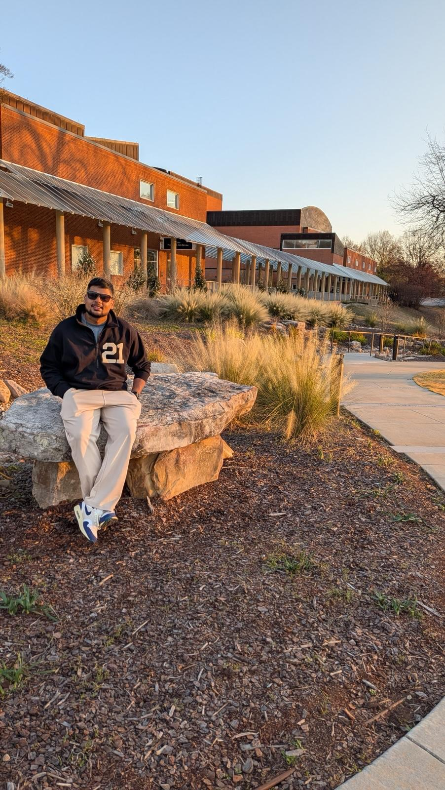

Cisco Systems
Software Engineer (Grade 08)
AI agents for network diagnosis, audio evidence retrieval for data-center faults, and edge systems that support vision workloads.
Explore Cisco projects ↗
Computer Vision · Multimodal Intelligence · Agentic AI · Distributed AI
I am Rahul Verma, an AI/ML engineer and PhD aspirant with more than five years of industry experience across Cisco Systems, OnePlus, and Tata Consultancy Services. I hold an MS by Research in Computer Science and Engineering from IIT Madras, where my VMware University Research Fund-supported work on federated learning for 5G orchestration resulted in three peer-reviewed IEEE publications. My research priorities are computer vision, multimodal intelligence, agentic AI, and distributed AI, with supporting interests in language, audio, generative models, and resource-aware deployment.
Industry experience
More than five years across network infrastructure, mobile vision, and distributed software. Follow each role to see the projects behind it.
Software Engineer (Grade 08)
AI agents for network diagnosis, audio evidence retrieval for data-center faults, and edge systems that support vision workloads.
Explore Cisco projects ↗Engineer L3
Object identification and segmentation for image editing within a phone's memory and response-time limits.
Explore OnePlus work ↗System Analyst
Distributed applications and data interfaces that made enterprise information usable for analytics and machine learning.
Explore TCS work ↗Academic path
At IIT Madras, I studied how to forecast network demand across providers without sharing their traffic data, then used those forecasts to decide when and where to add network services. The work led to three first-author IEEE papers. Advisor: Prof. Krishna Moorthy Sivalingam. Supported by the VMware University Research Fund, USA.
I graduated first in Information Technology at Terna Engineering College and earned All India Rank 502 in GATE Computer Science 2020 (97,481 candidates).
Research direction
I am interested in visual models that learn from incomplete supervision, multimodal systems that connect images, audio, language, graphs, and sensor evidence, agents that reason and use tools without losing provenance, and distributed learning systems that operate under privacy, latency, memory, and communication constraints.
My IIT Madras research began with a practical constraint: network providers could not share private traffic data. I studied federated forecasting, in which each provider trains locally and shares model updates, and then used the forecasts to investigate when to scale services and where to place them. The published experiments used public traces and synthetic data to represent separate providers.
Experience & selected projects
Start with a company, then open a project to see the problem, my contribution, and why it mattered.
Software Engineer · Aug 2024 – Present · AI agents, network intelligence, and edge platforms
Problem A network failure can leave clues scattered across measurements, logs, configurations, and earlier incidents.
My work I designed agents that gather evidence, test possible causes, verify a diagnosis, and prepare a response. A graph of devices and connections helps them follow real dependencies.
Outcome For targeted incidents, diagnosis fell from about 60 minutes to 5 minutes and active token use by more than 40%. Human approval, rollback, and post-action checks guard proposed changes.
Problem A brief alarm or change in fan noise may help explain an equipment fault but be hard to find in hours of audio.
My work I adapted and deployed a long-audio question-answering pipeline that indexes detected sounds with timestamps and retrieves the relevant recording interval for an engineer's question.
Why it matters The answer can be checked against a specific part of the recording instead of an unsupported summary of the whole file.
Built a graph-guided assistant for physical network faults. It connects a port to the hardware components behind it, combines that map with operational data, and helps engineers trace causes of unstable links or corrupted traffic. This is a separate, hardware-focused investigation tool from AgenticOps.
Built specialized LLM agents for bugs, security, performance, and maintainability, grounded by code knowledge graphs, semantic embeddings, and static-analysis signals. Used confidence-weighted aggregation and developer feedback to improve cross-file reasoning and finding quality.
Learned device-specific signatures from PoE power, current, and voltage telemetry through Cisco IOx and Isolation Forest to detect malicious hardware swaps and automate closed-loop port isolation.
Helped develop a hot-pluggable compute module that adds capacity to an industrial network switch for LLM and vision applications. I worked on shared-storage access, container support, data paths, telemetry, and workload benchmarking so AI services could run close to the network.
Problem A high-priority camera frame can be delayed by a lower-priority frame already crossing the link.
My work I implemented IEEE 802.1Qbu frame preemption, including firmware, traffic queues, per-port controls, and link-partner negotiation. The switch can pause the lower-priority frame, send the camera frame, then resume it.
Why it matters Time-sensitive vision applications receive visual data sooner.
Engineer L3 · Jul 2023 – Aug 2024 · On-device computer vision
Problem Removing an object from a photo depends on selecting the right pixels; a poor boundary remains visible after the background is filled.
My work At OnePlus, I worked on identifying the user-selected object and segmenting the pixels that belonged to it.
Constraint The result had to preserve visual detail within a phone's memory and response-time limits.
System Analyst · Jul 2018 – Sep 2020 · Distributed software and data foundations
Developed distributed applications and data interfaces for predictive analytics, scalable automation, and downstream machine-learning workflows.
Computer vision, NLP, and generative-model projects beyond industry roles
Problem In the FathomNet-CLEF 2026 challenge, some visible marine animals had no label, so a detector could mistakenly learn to treat them as background.
My work I implemented a positive-unlabeled pipeline with expanded training supervision, filtered candidate pseudo-labels, complementary detectors, and predictions merged across image resolutions.
Next question I proposed a controlled implicit-neural-representation experiment for small objects across scales. It is a proposal, not a reported result.
Fine-tuned DistilBERT on SpokenSQuAD using linear learning-rate decay and automatic mixed precision, improving test F1 from 52.25 to 54.05.
Implemented and compared three GAN architectures on CIFAR-10 across 40 epochs. DCGAN achieved the best FID of 206.19 versus 259.59 for WGAN and 281.99 for ACGAN.
Research record
Three IEEE publications connect my AI research to real-world network orchestration.
2022 IEEE International Conference on Cloud Networking, pp. 242–246. Compared federated LSTM and GRU demand forecasting with centralized learning while keeping each provider's traffic data local; GAN-generated traces helped address limited 5G data.
2023 IEEE Future Networks World Forum. Predicted the resources virtual network functions would need across multiple clouds, compared federated predictions with centralized and conventional models, and integrated the estimates into a placement algorithm.
Vol. 12, pp. 129826–129843. DOI: 10.1109/ACCESS.2024.3458437. Extended the forecasting research with a discrete-event simulator comparing proactive scaling, reactive scaling, and no scaling across traffic workloads.
Let’s connect